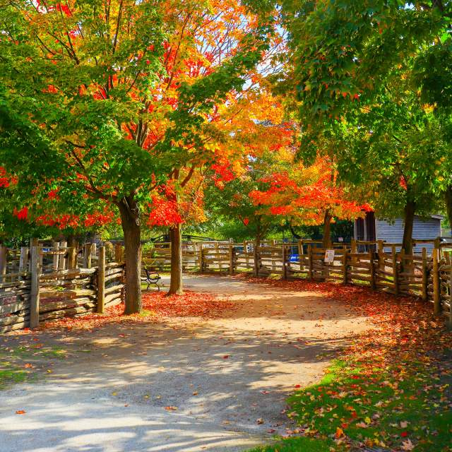

About Toronto Farms

Type of Region: Temperate
Water Scarcity Level: 2 (Moderate)
Risk Due to Pests: 3 (Moderate Risk)
Soil Health: 4 (Good Soil Health)
Native Plants in Toronto
- Goldenrod
- Ontario Violets
- Wild Bergamot
- Ontario Milkweed
- Black-eyed Susan
What Farmers Grow in Toronto
Farmers in Toronto typically grow a variety of vegetables, fruits, and flowers. Here’s what is commonly cultivated during the seasons:
Spring:
- Leafy Greens (lettuce, spinach)
- Radishes
- Peas
Summer:
- Tomatoes
- Peppers
- Squash
- Beans
Fall:
- Carrots
- Brussels Sprouts
- Beets
- Squash (for winter storage)
Winter:
- Cold-weather greens (kale, arugula)
- Root vegetables (carrots, potatoes)